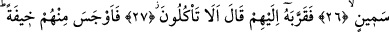

İBRAHİM’İN MİSAFİRLERİNİN
HABERİ SANA GELDİ Mİ?
24. İbrahim’in ağırlanan misâfirlerinin haberi sana geldi mi? (Bunlar meleklerdi.)
25. Onlar İbrahim’in yanına girmişler, selam vermişlerdi. İbrahim de selamı almış,
içinden, «Bunlar, yabancılar» demişti.
26. Hemen ailesinin yanına giderek semiz bir dana (kebabını) getirmiş,
27. Onların önüne koyup «Yemez misiniz?» demişti.
28. Derken onlardan korkmaya başladı. «Korkma» dediler ve ona bilgin bir oğlan
çocuğu müjdelediler.
29. Karısı çığlık atarak geldi. Elini yüzüne çarparak: «Ben kısır bir
kocakarıyım!» dedi.
30. Onlar: «Bu böyledir. Rabbin söylemiştir. O, hikmet sâhibidir, bilendir» dediler.
31. (İbrahim:) O halde işiniz nedir, ey elçiler? dedi.
32. «Biz, dediler, suçlu bir kavme gönderildik.»
33. «Üzerlerine çamurdan taş yağdırmaya (geldik).»
34. (Bu taşlar,) aşırı gidenler için Rabbinin katında işâretlenmiş (taşlardır).
35. Bunun üzerine orada bulunan müminleri çıkardık.
36. Zaten orada müslümanlardan, bir ev halkından başka kimse bulmadık.
37. Acı azaptan korkanlar için orada bir işâret bıraktık.
Bu cümlenin soru ile başlaması olayın durumunun büyüklüğüne delâlet eder. Çünkü bu